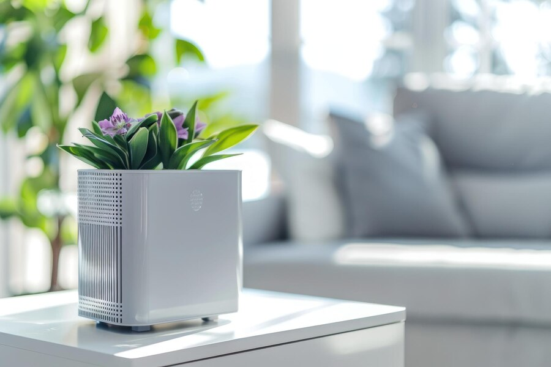
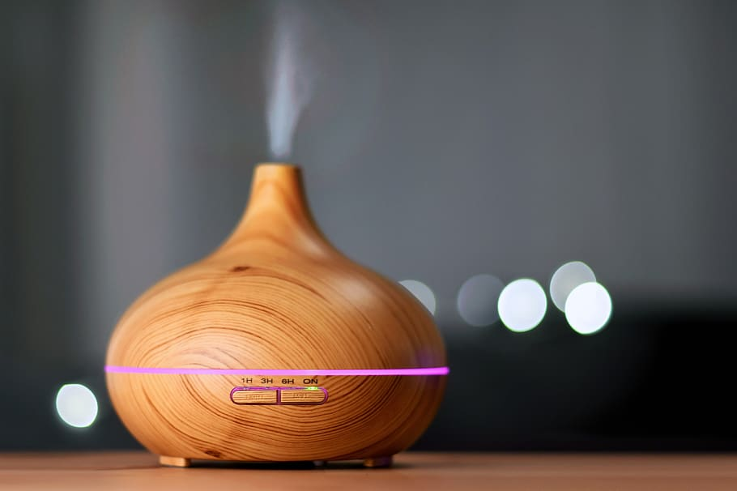

Difference between humidifiers and purifiers
Written By: Avery Grey In hvac and lighting
These two machines can both have a big impact on the air you breathe. One is an air purifier, and the other is a humidifier. We're comparing them against each other to find the best one for you. Let's dive in.

Air purifiers
Air purifiers clean particulates out of the air. Humidifiers add water to it. Air purifiers help with allergies or dust or pollen in the air. It might help with odors. It might help with asthma. It's more broadly useful in any given season if you just want fresher air indoors.
For the most part, these devices combine a filter and a fan. Wild stuff. Take some filter, put it over a box fan, and turn on the box fan, and boom, you just made yourself an air purifier. The concept is indeed simple, but fortunately, the tech in the ones you pay for is usually worth it. For one thing, there are different types of filters, including a type called HEPA that can remove particulates as small as 0.3 microns with 99.97% efficacy. Dope.
There are also have paper filters, fiber filters, mesh filters, some use an electrostatic charge to trap extra dust. Go with HEPA for your best bet at removing allergens. Look for a model that uses UV light to zap diseases in particular. Look for a filter with activated charcoal to remove smelly pollutants and volatile organic compounds or VOCs.

Humidifiers
Humidifiers help with itchy dry skin. Dry air can cause nosebleeds or sinus pressure. Proper humidity can help regulate the temperature inside and help your house plants stay healthy. Proper humidity can also help your wooden floors last longer. Believe it or not, it can even reduce static electricity especially during dry weather, which obviously can be annoying. But mostly, you'll need this in the winter and you'll need it if your skin is dry or your lips are chapped.
Basically you'd need to stretch something spongy and wet over a box fan and keep rewetting it. Again, good news. You can just buy something that does all that automatically, and really, that's what most humidifiers do. A sponge wakes up some water from a basin, a fan blows it into the air.
Warm mist models and ultrasonic models are different, and we're gonna talk about them in a second. But if you see cool mist, that's a fancy way of saying it's an ordinary humidifier. But believe it or not, this simple tech is very effective. It's self regulating. And cool mist is good even for helping with coughs or cold symptoms. The reason it's self regulating is because of how humidity works. The more humid the air, the slower it absorbs water. So when your air is super dry, the fan is adding water at turbo speed just because the air is eager to drink it up. Once it is more moistened, same process but slower now.
So, apparently you've got smart air in your home, which is pretty cool. It's definitely something you should brag about to your neighbors. Both ultrasonic and warm mist humidifiers are quieter because they don't need a fan. Warm mist is extra nice in the winter, but these machines aren't strong enough to really raise the room temperature. It's just a nice extra bit of warm aura if you're near it. If it's cold, humidifiers help actually because more humid air naturally feels warmer. It boils water and then the evaporated water rises into the air.
Because you have boiling water, you'll want to be careful with this one and make sure it's not in a place where kids or pets or drunk relatives could knock it over. Ultrasonic models vibrate the water really quickly to create air bubbles. You end up with a really fine mist that helps with scratchy throats. It's cool, quiet tech, but you'll probably pay more for an ultrasonic one than a basic or cool mist model.
It's okay to get both an air purifier and a humidifier. Maybe they'll get along after all. They serve pretty different purposes even if those purposes are roughly in the same category. But don't put your humidifier right next to your air purifier because the extra moisture might clog the filter over here. And check the size and rating of your humidifier.
Remember, too much moisture can cause mold. It does self regulate to an extent, but still be careful. So proper rating, proper size, proper distance from your humidifier are all good things to ensure.